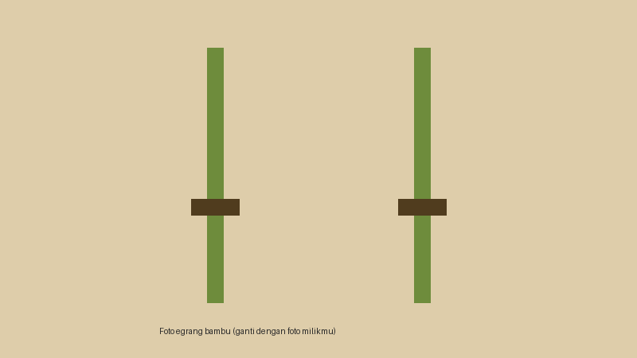

Selamat Datang
Egrang adalah permainan tradisional yang dimainkan dengan berdiri dan berjalan di atas dua batang bambu panjang yang diberi pijakan kaki. Di tanah Sunda, permainan ini biasa dimainkan anak-anak di halaman, pematang sawah, atau lapangan desa, terutama saat waktu luang sepulang sekolah.

Mengapa Egrang Layak Dilestarikan?
Melatih Keseimbangan
Pemain harus menjaga tubuh tetap tegak di atas pijakan yang sempit, sehingga keseimbangan dan konsentrasi ikut terlatih.
Dibuat dari Bahan Sekitar
Bambu mudah ditemukan di Jawa Barat, jadi egrang bisa dibuat sendiri tanpa biaya besar.
Dimainkan Bersama
Egrang sering dimainkan dalam bentuk lomba adu cepat, sehingga mempererat kebersamaan antarpemain.
Isi Website
- Beranda: pengantar singkat tentang egrang.
- Mengenal Egrang: bagian, cara bermain, dan tingkat kesulitan.
- Usulan Permainan: formulir untuk mengusulkan permainan tradisional lain.